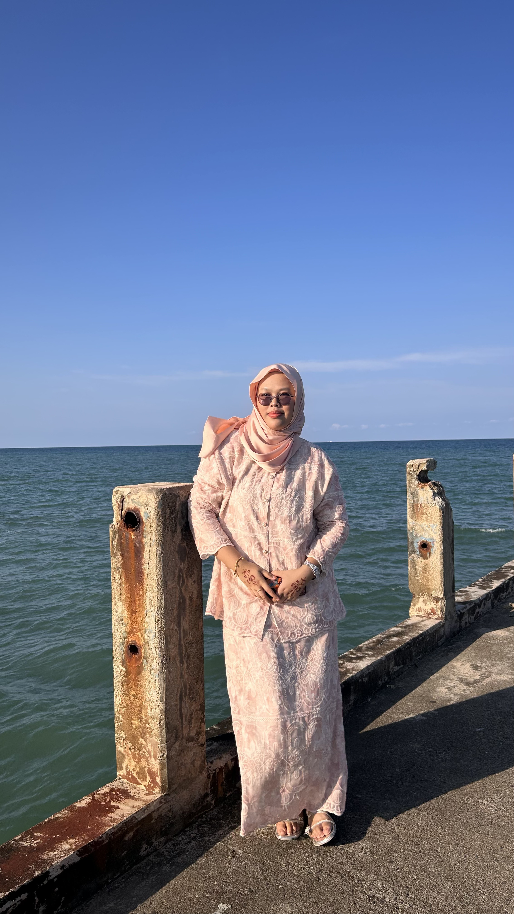
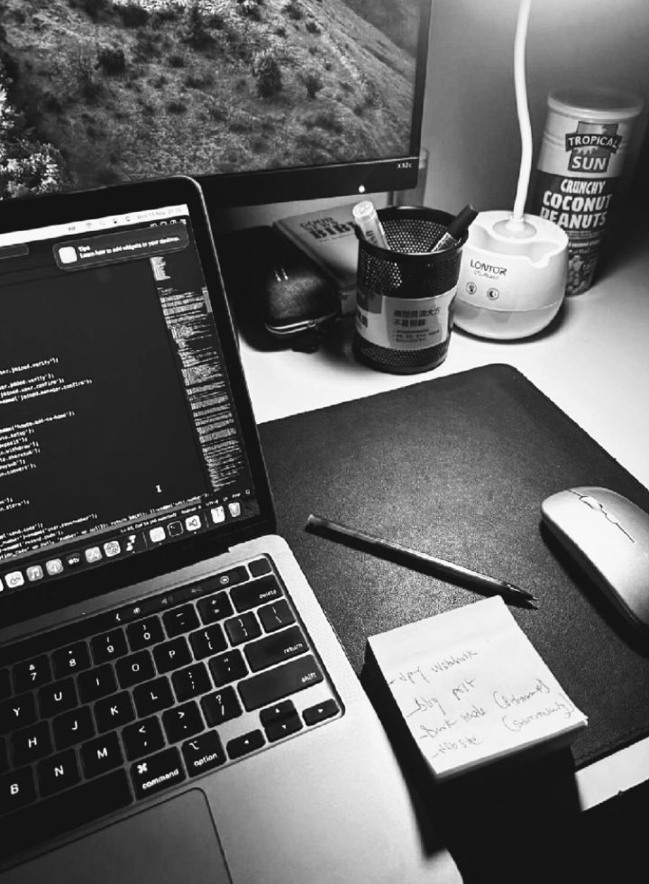

Bachelor of Information Technology with Business Management
Hello! I'm Ain Batrisyia, an Information Technology student at University College TATI. Explore my website to learn more about my background, interests, education, and academic projects.
Explore Highlights ↓
This is me
“Simplicity is the ultimate sophistication.”
— Batrisyia • Editorial Portfolio Issue 01
My Workspace
Apart from my studies, I enjoy exploring simple website designs, watching videos, and discovering new ideas related to technology and creativity.
06
Curated Web Pages
03+
Years Academic Journey
03
Academic Projects
2026
BIBM Student
Explore the different sections of my website to learn more about me.
01 / Profile
Personal background, core competencies, and biography.
02 / Academic
Degree details, university timeline, and qualifications table.
03 / Works
Web development projects, systems analysis, and coursework.
04 / Curation
Favourite activities, digital interests, and useful websites.
Key technologies and disciplines practiced throughout my studies: